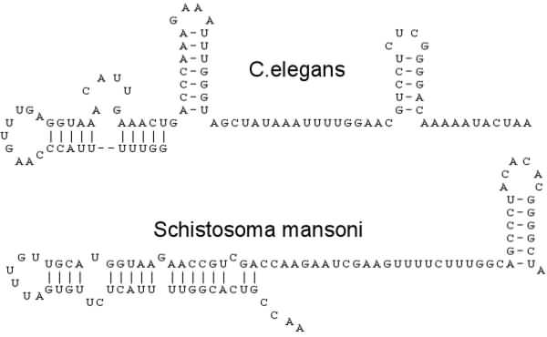

Information on Trans-splicing
Trans-splicing was originally considered a rare side reaction occurring in certain parasites such as trypanosomes. However, genomic searches were able not only to identify the known examples of trans-splicing but also to indicate a large potential for these and related reactions to occur in other organisms including vertebrates. These results were followed by showing that the leader sequence from parasites could, in fact, be trans-spliced by factors contained in HeLa cell extracts and a number of examples from a wide range of different organisms.
Trans-splicing involves the RNA splicing of separate precursors giving rise to one mature mRNA.
C. elegans genes are trans-spliced by receiving a 22 nt SL sequence at their 5' ends. The leader is derived from a 100 nt RNA which itself is part of an snRNP with a functional Sm site as in other snRNAs. Unlike in trypanosomes, cis- and trans-splicing both occur in C. elegans. It has been shown that if an mRNA transcript begins with an intron-like RNA at its 5' end (termed outron), rather than an exon, then it is targeted for trans-splicing. Interestingly, C. elegans has developed two SL forms, i.e., SL1 and SL2, in which the SL1 is trans-spliced onto most of the mRNA, but SL2 from snRNA SL2 can provide the same function if SL1 is missing.
What would be the physiological significance of trans-splicing in higher eukaryotes, for instance in man? Considering the estimate that about half of the roughly 35,000-45,000 human genes are involved in brain differentiation, the trans-splicing type of RNA regulation may also be implicated in similar processes, including development and differentiation. Splicing enhancers can control splice-site selection and alternative splicing of nuclear pre-mRNA. Bruzik and Maniatis showed that RNA molecules containing a 3' splice site and enhancer sequence are efficiently spliced in trans. The products are RNA molecules containing normally cis-spliced 5' splice sites or normally trans-spliced SL-RNAs from lower eukaryotes. Ser-Arg-rich splicing factors bind and stimulate this reaction.
Recent research indicates more directly that trans-splicing processes occur in mammals: Shimizu describes trans-splicing as the most probable mechanism involved in second isotype immunoglobulin expression simultaneously expressed with IgM. Further, trans-splicing and alternative-tandem-cis-splicing are two ways by which mammalian cells generate a truncated SV40 T-antigen. Trans-splicing has also been shown to occur in cultured mammalian cells.
Clearly identified trans-splicing reactions include trans-splicing with SL sequences such as:
- In trypanosomes (all mRNAs; 39 nt mini-exon within 140 nt SL-RNA; SL-RNA genes in tandem arrays).
- In nematodes (10-15% of mRNAs; 22 nt mini-exon within 100 nt SL-RNA; SL1 (but not SL2) RNA genes in tandem repeats with 5S rRNA genes, in some genera on opposite strands).
- Schistosoma mansoni (some mRNAs only are trans-spliced using a 36 nt min-exon within 90 nt SL-RNA; SL-RNA genes again in tandem arrays).
- Euglena gracilis where most mRNAs are trans-spliced using a 26 nt mini-exon within 100 nt SL-RNA (SL-RNA genes in tandem repeats with 5S rRNA genes).
2 Examples of Trans-splicing structures:
